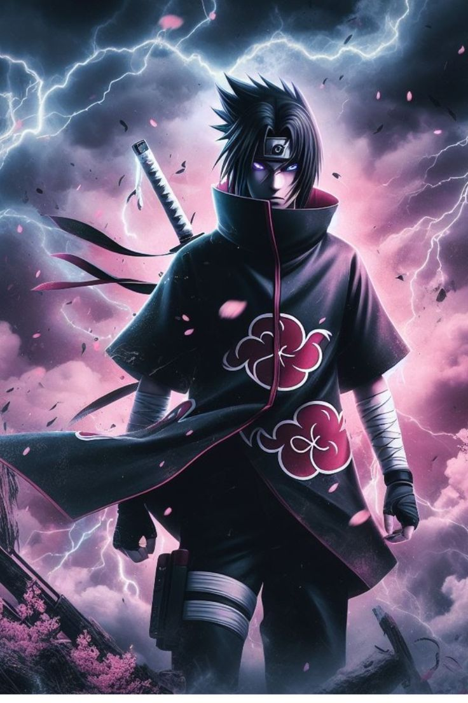

Sasuke Uchiha is one of the main characters in Naruto, known for his exceptional talent, intense personality, and complex journey driven by revenge and redemption. He is the last surviving member of the Uchiha clan after his older brother, Itachi Uchiha, massacred their family, which deeply shaped Sasuke’s goal of becoming stronger to avenge his clan.
From a young age, Sasuke showed prodigious skill as a ninja, excelling in combat, strategy, and techniques like the Sharingan and powerful fire-style jutsu. His desire for power eventually led him to leave the Hidden Leaf Village and seek strength from Orochimaru, becoming more ruthless and focused on his mission. Over time, he awakened the Mangekyō Sharingan and later the Rinnegan, gaining abilities such as Amaterasu, Susanoo, and advanced space-time techniques.
Sasuke Uchiha from Naruto has a complex and evolving personality shaped by trauma, ambition, and inner conflict. As a child, Sasuke was kind, caring, and deeply attached to his family, especially his older brother Itachi Uchiha. However, after witnessing the massacre of his clan, he became cold, distant, and driven by a single goal—revenge. He rarely showed emotion, kept others at a distance, and focused entirely on becoming stronger.
After learning the truth about Itachi, his personality shifts again—this time toward anger at the Hidden Leaf and a desire to change the shinobi world entirely. Eventually, through his encounters with Naruto Uzumaki, Sasuke begins to rediscover his humanity. He becomes more reflective and accepts his past, ultimately choosing a path of redemption while still maintaining his serious, calm, and independent nature.
Sasuke Uchiha from Naruto possesses a wide range of powerful abilities that make him one of the strongest shinobi in the series. His core power comes from the Sharingan, which allows him to read movements, copy techniques, and cast genjutsu, later evolving into the Mangekyō Sharingan that grants abilities like Amaterasu (black flames) and advanced control over them. He can also summon Susanoo, a massive armored warrior used for both offense and defense.
After gaining the Rinnegan, Sasuke acquires even more advanced powers, including space-time ninjutsu that allows him to teleport and switch places with objects or people, as well as the ability to perceive invisible forces and dimensions. He is highly skilled in lightning-style techniques, especially his signature attack, Chidori, which he uses with incredible speed and precision. In addition to his dōjutsu, Sasuke is an elite swordsman, an expert strategist, and possesses exceptional speed and reflexes. His combination of visual prowess, elemental jutsu, and tactical intelligence makes him a versatile and extremely dangerous fighter capable of taking on the strongest opponents in the ninja world.

Sasuke Uchiha from Naruto undertakes several major missions throughout his life, each reflecting his changing goals and mindset. His earliest and most defining mission is his quest for revenge against his brother, Itachi Uchiha, which drives him to leave the Hidden Leaf Village and seek power from Orochimaru. After forming Team Hebi (later Taka), his primary mission becomes locating and defeating Itachi, which he eventually accomplishes.
Following the truth about Itachi’s sacrifice, Sasuke’s mission shifts dramatically toward destroying the Hidden Leaf Village as revenge for the suffering inflicted on his clan, putting him in direct conflict with figures like Naruto Uzumaki. During this phase, he also allies with the Akatsuki and takes part in operations such as capturing tailed beasts.
Sasuke Uchiha joins the Akatsuki during a dark and transitional phase of his life in Naruto. After defeating his brother Itachi Uchiha, Sasuke learns the truth about Itachi’s sacrifice for the Hidden Leaf Village from Obito Uchiha. This revelation completely changes his perspective, filling him with anger toward the village leadership that forced Itachi into such a tragic decision.
Driven by revenge against the Hidden Leaf, Sasuke forms Team Taka and temporarily aligns himself with the Akatsuki to gain resources and support for his new goal. During this time, he participates in missions such as attempting to capture Killer Bee, the Eight-Tails’ jinchūriki. However, Sasuke is never truly loyal to the organization—he uses the Akatsuki as a means to achieve his own objectives rather than fully submitting to its leadership.